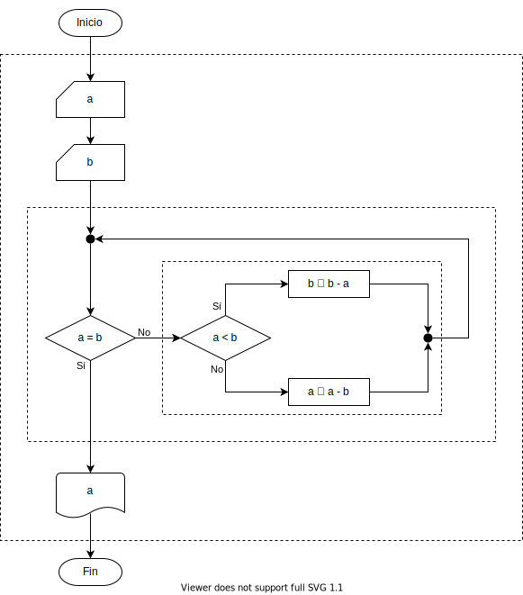

Ricardo Pérez López
IES Doñana, curso 2025/2026
Un subprograma o subrutina es una porción de código que por sí solo no representa un programa, aunque sigue el mismo esquema de «entrada \rightarrow proceso \rightarrow salida» que sigue cualquier programa, por lo que funciona «casi» como si lo fuera.
Como no es un programa, no puede funcionar por sí solo, sino que debe formar parte de un verdadero programa que lo ejecute las veces que sea necesario, indicando su nombre o su posición dentro del mismo.
Visto de esta forma, actúa de manera similar a un virus: no puede vivir por sí solo, sino que necesita otro organismo mayor que lo hospede.
El objetivo de un subprograma es el de realizar una tarea específica dentro de un programa, de manera que se pueda acudir a él cada vez que el programa lo necesite.
Cuando creamos un subprograma y le damos un nombre, se crea una unidad de código empaquetado que actúa bajo ese nombre, de manera que, para poder usarla, hay que llamarla invocando su nombre.
Cuando se llama al subprograma, la ejecución de la instrucción actual se detiene y se transfiere el control al inicio del subprograma, que comienza su ejecución.
Cuando finaliza la ejecución del subprograma, el control vuelve a la instrucción siguiente a la que se había detenido, para continuar la ejecución del programa desde ahí.
Un subprograma puede llamar a otro subprograma, lo que hace que varias instrucciones puedan estar detenidas en un momento dado a la espera de terminar la ejecución del subprograma que se llamó.
Los subprogramas nos ayudan a:
Descomponer el problema principal en subproblemas más pequeños que se pueden resolver por separado de una forma más o menos independiente del resto.
Ocultar la complejidad de partes concretas de un programa bajo capas de abstracción con diferentes niveles de detalle.
Desarrollar el programa mediante sucesivos refinamientos de cada nivel de abstracción.
Evitar repeticiones del mismo código al realizar tareas rutinarias que se van a ejecutar varias veces en diferentes puntos del programa.
En definitiva, los subprogramas son abstracciones, si se definen y usan adecuadamente.
En programación funcional:
Las funciones que hemos creado hasta ahora con abstracciones lambda son subprogramas compuestos por una sola expresión (el cuerpo de la abstracción lambda).
De hecho, en el paradigma funcional, las funciones son el único tipo de subprograma que existe.
En programación imperativa:
Un lenguaje de programación imperativo también debería permitir la creación de subprogramas.
En ese caso, los subprogramas deberían estar compuestos por sentencias en lugar de por expresiones, ya que las sentencias son la base del paradigma imperativo.
Tradicionalmente, en los lenguajes imperativos, los subprogramas han adoptado dos formas principales: funciones y procedimientos.
Es importante resaltar que las funciones en el paradigma imperativo (las así llamadas funciones imperativas) no son como las funciones del paradigma funcional.
En concreto, las funciones imperativas están formadas por sentencias, no por expresiones.
La diferencia entre una función y un procedimiento es que las funciones devuelven valores mientras que los procedimientos no.
Por ejemplo, en el lenguaje imperativo Pascal se diferencian las function (funciones, que devuelven valores) de los procedure (procedimientos, que no devuelven valores).
Pero hay lenguajes imperativos, como C o Python, que no tienen procedimientos, sino que todos sus subprogramas son funciones.
En estos lenguajes, los «procedimientos» son funciones que
devuelven un valor especial que representa «ningún valor» (como
el None
de Python).
Así, podemos afirmar que, en Python:
Existen dos formas de definir funciones: las expresiones lambda y las funciones imperativas (que veremos a continuación).
Los procedimientos no son más que funciones imperativas que
devuelven None.
La programación procedimental (procedural programming) es un paradigma de programación imperativa basada en los conceptos de subprograma y llamada a subprogramas.
En este paradigma, un programa imperativo está compuesto principalmente por subprogramas que se llaman entre sí, los cuales están compuestos, a su vez, por sentencias.
Los subprogramas pueden tener parámetros a través de los cuales reciben sus datos de entrada, caso de necesitarlos.
A su vez (si los subprogramas son funciones), pueden devolver un resultado, de ser necesario.
Los subprogramas, dependiendo del lenguaje de programación usado, introducen su propio ámbito local y también podrían acceder a otros ámbitos no locales que contengan al suyo, como el ámbito global.
Asimismo, los subprogramas suelen contar con un espacio de nombres propio que almacena sus nombres locales para evitar el name clash.
Durante el proceso de diseño descendente por refinamiento sucesivo que estudiamos en programación estructurada, se pueden ir creando subprogramas que representen diferentes niveles de detalle en el diseño descendente.
Recordemos que una estructura de control es una sentencia compuesta y, como tal, podemos estudiarla como si fuera una sola sentencia (con su entrada y su salida), sin tener que conocer el detalle de cómo funciona por dentro, es decir, sin tener que conocer qué sentencias más simples contiene.

De igual forma, una llamada a un subprograma es una instrucción simple que actúa como una sentencia compuesta, formada por varias sentencias (el cuerpo del subprograma) que actúan como una sola.
En ese caso, el subprograma actúa como un recurso abstracto en un determinado nivel (en ese nivel, se invoca al subprograma aunque aún no exista) que luego se implementa en un nivel de mayor refinamiento.
El uso de subprogramas para escribir programas siguiendo un diseño descendente nos lleva a un código descompuesto en partes separadas en lugar de tener un único código enorme con todo el texto del programa escrito directamente al mismo nivel.
Esta forma de refinamiento y de diseño descendente está ya más relacionado con el concepto de programación modular, que estudiaremos posteriormente.
En un ordinograma, una llamada a un subprograma se representa como un rectángulo con doble trazo superior.
Por ejemplo, en programación estructurada, diseñamos el siguiente algoritmo que imprime la tabla de multiplicar de n \times n:
El ejemplo anterior, descompuesto en subprogramas, podría ser así:
Aquí se puede apreciar que existe un algoritmo o programa principal y unos subprogramas (que aquí podríamos llamar también subalgoritmos) que son usados desde el programa principal o desde otros subprogramas.
Dependiendo del lenguaje de programación usado, ese programa principal podrá ser:
otro subprograma «destacado», con un nombre o una marca especial,
desde el cual se iniciaría la ejecución del programa (como la función
main de C o el método main de Java), o
bien
un bloque de código independiente que no pertenece a ningún subprograma (caso de los lenguajes Pascal o Python).
El código escrito mediante descomposición en subprogramas tiene dos grandes ventajas:
Es más fácil estudiar y entender un código basado en abstracciones independientes y separadas que se llaman entre sí, antes que un código donde todo está en el mismo nivel de refinamiento formando un texto monolítico de principio a fin.
Es probable que los subprogramas así obtenidos puedan reutilizarse en otros programas con poca o ninguna variación, siempre y cuando sean lo suficientemente genéricos e independientes del resto del programa que los utiliza.
Esta propiedad se conoce como reusabilidad.
Estas ventajas nos están ya haciendo entender que puede resultar interesante diseñar un programa descomponiéndolo en partes separadas, asunto que veremos con más detalle al estudiar la programación modular.
Pero no debemos confundir la programación procedimental con la programación modular, que son términos relacionados pero diferentes.
Asimismo, la mayoría de los lenguajes estructurados permiten la creación de subprogramas, lo que a veces lleva a la confusión de creer que la programación estructurada y la procedimental son el mismo paradigma.
El diseño descendente también tiene inconvenientes:
Hasta que no se ha llegado al nivel más bajo, no se tiene algo que pueda probarse, ensamblarse y ejecutarse.
Por tanto, es un enfoque más difícil de aplicar si no se entienden bien los detalles prácticos ni se conocen perfectamente desde el principio los requisitos del programa que hay que constuir.
Puede ignorar la reutilización de subprogramas ya existentes.
Resulta fácil obtener subprogramas que sólo sean útiles para el programa actual y no se puedan generalizar para su reutilización en otras situaciones.
Cada lenguaje de programación procedimental establece sus propios mecanismos de creación de subprogramas.
En Python, los subprogramas compuestos por sentencias se crean mediante las denominadas funciones imperativas.
Estudiaremos ahora cómo crear y usar funciones imperativas en Python.
Al igual que ocurre en programación funcional, una función imperativa es una construcción sintáctica que acepta argumentos y produce un resultado.
Pero a diferencia de lo que ocurre en programación funcional, una función imperativa contiene sentencias.
Las funciones imperativas en Python son los bloques constructivos básicos que nos permiten descomponer un programa en partes que se combinan entre sí, lo que resulta el complemento perfecto para la programación estructurada.
Todavía podemos construir funciones mediante expresiones lambda, pero las funciones imperativas tienen ventajas:
Podemos escribir sentencias dentro de las funciones imperativas.
Podemos escribir funciones que no devuelvan ningún resultado porque su cometido sea provocar algún efecto lateral.
La definición de una función imperativa tiene la siguiente sintaxis:
def ⟨nombre⟩([⟨lista_parámetros⟩]):donde:
identificador
[,
identificador]*Por ejemplo:
La definición de una función imperativa es una sentencia
compuesta, es decir, una estructura (como las
estructuras de control if, while,
etcétera).
Por tanto, puede aparecer en cualquier lugar del programa donde pueda haber una sentencia.
Como en cualquier otra estructura, las sentencias que contiene (las que van en el cuerpo de la función) van indentadas (o sangradas) dentro de la definición de la función.
Por tanto (de nuevo, como en cualquier otra estructura), el final de la función se deduce al encontrarse una sentencia menos indentada que el cuerpo, o bien el final del script.
La definición de una función es una sentencia ejecutable que, como cualquier otra definición, crea una ligadura entre un identificador (el nombre de la función) y una variable que almacenará una referencia a la función.
Esta función, como cualquier otro valor, se guardará en el montículo.
La definición de una función no ejecuta el cuerpo de la función. El cuerpo se ejecutará únicamente cuando se llame a la función, al igual que ocurría con las expresiones lambda.
Esa definición se ejecuta en un determinado ámbito (normalmente, el ámbito global) y, por tanto, su ligadura y su variable se almacenarán en el marco del ámbito donde se ha definido la función (normalmente, el marco global).
Asimismo, el cuerpo de una función imperativa determina un ámbito, al igual que ocurría con las expresiones lambda.
Nuestra gramática se vuelve a ampliar para incluir las definiciones de funciones imperativas como un caso más de sentencia compuesta:
def ⟨nombre⟩([⟨lista_parámetros⟩]):En la definición de un función, podemos indicar los tipos tanto de los parámetros como del valor de retorno de la función.
Esos tipos son, efectivamente, anotaciones de tipo (o type hints en inglés), y ya los hemos visto anteriormente, por ejemplo al escribir la signatura de una función.
En realidad, la primera línea de la definición de una función
(que técnicamente se denomina la cabecera de la
función) podría entenderse que es la signatura de la función, precedida
por la palabra clave def.
Por ejemplo, la siguiente definición de una función que saluda a una persona a partir de su nombre y sus apellidos:
se podría anotar de la siguiente forma:
lo que nos lleva a que la función tiene la siguiente signatura:
\texttt{saluda(\(nombre\):\,str,\;\(apellidos\):\,str)\;->\;None}
La función anterior devuelve None porque realmente
no devuelve ningún valor (su único cometido es escribir en la consola
usando print).
Por tanto, nuestra sintaxis se puede ampliar para incluir las anotaciones de tipo en las definiciones de las funciones:
def ⟨nombre⟩([⟨lista_parámetros⟩])[->
⟨tipo⟩]:identificador[[:
⟨tipo⟩]
[,
identificador]*Es importante recordar que el intérprete no comprueba en ningún
momento las anotaciones de tipo para verificar que son correctas. Para
ello se utilizan herramientas externas como pylint o
mypy.
Sabemos que una llamada a cualquier función es una expresión que, como cualquier otra expresión, se evalúa en busca de su valor.
De la misma forma, una llamada a una función imperativa es una expresión que se evalúa para determinar su valor, pero, al hacerlo, se provoca la ejecución de las sentencias que forman el cuerpo de la misma.
Por eso, cuando llamamos a la función también decimos que estamos ejecutando la función, ya que estamos provocando la ejecución de las sentencias que contiene.
Sintácticamente, una llamada a una función imperativa tiene la misma forma que una llamada a cualquier función.
Cuando se llama a una función imperativa, ocurre lo siguiente (en este orden):
Como siempre que se llama a una función, se crea un nuevo marco en el entorno (que contiene las ligaduras y variables locales a su ámbito, incluyendo sus parámetros) y se almacena en la pila de control.
Se pasan los argumentos de la llamada a los parámetros de la función, de forma que los parámetros toman los valores de los argumentos correspondientes.
El flujo de control del programa se transfiere al bloque de sentencias que forman el cuerpo de la función y se empieza a ejecutar éste.
Cuando se termina de ejecutar el cuerpo de la función (o, dicho de otra forma, cuando se sale de la función):
Se genera su valor de retorno (en breve veremos cómo).
Se saca su marco de la pila.
Se devuelve el control de la ejecución a la sentencia que llamó a la función.
Se sustituye, en dicha sentencia, la llamada a la función por su valor de retorno.
Se continúa la ejecución del programa desde ese punto.
Como una expresión, por sí sola, es también una sentencia válida según la sintaxis de Python, podemos usar una llamada a una función como una sentencia simple allí donde se espera una sentencia cualquiera.
En consecuencia, podemos considerar que una sentencia formada únicamente por una llamada a una función es una sentencia simple que, en realidad, actúa como una sentencia compuesta: una estructura secuencial (o bloque), que es el cuerpo de la función y que se ejecuta cuando se llama a ésta.
Debemos tener en cuenta que, en ese caso, el valor de retorno se perdería ya que no se usaría.
Por ejemplo, supongamos que la función saluda que
vimos antes devolviera el número de caracteres que tiene el nombre que
recibe como argumento.
Si llamamos a la función como una expresión, podríamos usar ese valor de retorno:
y daría:
Hola Manuel González
El nombre de pila tiene 6 caracteresPero si llamamos a la función como una sentencia:
esa llamada devolvería el valor 6 (la longitud de la
cadena 'Manuel')
pero dicho valor se perdería ya que nunca se usa dentro de ninguna
expresión ni como parte de otra sentencia.
Por ejemplo:
Produce la siguiente salida:
Hola Pepe
Encantado de saludarte
El gusto es mío
Hola Juan
Encantado de saludarte
Hasta luego, Lucas
Sayonara, babyUna función puede llamar a otra.
Por ejemplo, este programa:
Produce la siguiente salida:
Hola Pepe
Me llamo Ricardo
Encantado de saludarte
El gusto es mío
Hola Juan
Me llamo Ricardo
Encantado de saludarte
Hasta luego, Lucas
Sayonara, babyLa función debe estar definida antes de poder llamarla.
Eso significa que el intérprete de Python debe ejecutar el def de una
función antes de que el programa pueda llamar a esa función.
Por ejemplo, el siguiente programa lanzaría el error «NameError: name ‘hola’ is not defined» en la línea 1:
En cambio, este funcionaría perfectamente:
En el marco de la función llamada se almacenan, entre otras cosas, los parámetros de la función.
Al entrar en la función, los parámetros contendrán los valores de los argumentos que se hayan pasado a la función al llamar a la misma.
Existen distintos mecanismos de paso de argumentos, dependiendo del lenguaje de programación utilizado.
Los más conocidos son los llamados paso de argumentos por valor y paso de argumentos por referencia.
En Python existe un único mecanismo de paso de argumentos llamado paso de argumentos por asignación, que en la práctica resulta bastante sencillo:
Lo que hace el intérprete es asignar el argumento al
parámetro, como si hiciera internamente ⟨parámetro⟩ = ⟨argumento⟩, por lo que se aplica
todo lo relacionado con los alias de variables, mutabilidad,
etc.
Por ejemplo:
En la línea 5 se llama a saluda asignándole al
parámetro persona el valor 'Manolo'.
En la línea 7 se llama a saluda asignándole al
parámetro persona el valor de
x, como si se hiciera persona = x, lo que sabemos que crea un
alias.
En este caso, la creación del alias no nos afectaría, ya que el valor pasado como argumento es una cadena y, por tanto, inmutable.
En caso de pasar un argumento mutable:
La función es capaz de cambiar el estado interno de la lista que se ha pasado como argumento porque:
Al llamar a la función, el argumento lista se pasa a la función
asignándola al parámetro l como si hubiera hecho l = lista.
Eso hace que ambas variables sean alias una de la otra (se refieren al mismo objeto lista).
Por tanto, la función está modificando el valor de la variable
lista que se ha pasado como
argumento.
Recordemos de nuevo que el intérprete no comprueba si los tipos de los argumentos coinciden con los esperados en la lista de parámetros cuando se usan anotaciones de tipos.
Por tanto, el intérprete de Python ejecutará el siguiente programa sin dar ningún error:
El intérprete no se quejará aunque en la llamada a la función le
hayamos pasado un argumento de tipo int cuando
deberíamos haberle pasado uno de tipo str, según se
indica en su lista de parámetros.
En este caso, además, la función print tampoco
dará ningún error ya que puede imprimir valores de tipo entero.
returnPara devolver el resultado de la función al código que la llamó,
hay que usar una sentencia return.
Cuando el intérprete encuentra una sentencia return dentro
de una función, ocurre lo siguiente (en este orden):
Se genera el valor de retorno de la función, que será el valor de
la expresión que aparece en la sentencia return.
Se finaliza la ejecución de la función, sacando su marco de la pila.
Se devuelve el control a la sentencia que llamó a la función.
En esa sentencia, se sustituye la llamada a la función por su valor de retorno (el calculado en el paso 1 anterior).
Se continúa la ejecución del programa desde ese punto.
Por ejemplo:
La función se define en las líneas 1–2. El intérprete lee la definición de la función pero no ejecuta las sentencias de su cuerpo en ese momento (lo hará cuando se llame a la función).
En la línea 6 se llama a la función suma pasándole como argumentos los
valores de a y b, asignándolos a x e y, respectivamente.
Dentro de la función, en la sentencia return se
calcula la suma x +
y y se finaliza la ejecución de
la función, devolviendo el control al punto en el que se la llamó (la
línea 6) y haciendo que su valor de retorno sea el valor calculado en la
suma anterior (el valor de la expresión que acompaña al return).
El valor de retorno de la función sustituye a la llamada a la función en la expresión en la que aparece dicha llamada, al igual que ocurre con las expresiones lambda.
Por tanto, una vez finalizada la ejecución de la función, la línea 6 se reescribe sustituyendo la llamada a la función por su valor.
Si, por ejemplo, suponemos que el usuario ha introducido los
valores 5
y 7 en
las variables a y b, respectivamente, tras finalizar la
ejecución de la función tendríamos que la línea 6 quedaría:
y la ejecución del programa continuaría ejecutando la sentencia tal y como está ahora.
En resumen: la llamada a una función imperativa es una expresión que se evalúa ejecutando el cuerpo de la función (sustituyendo previamente los parámetros por los argumentos de la llamada), de forma que el valor de la expresión será el valor de retorno de la función llamada.
También es posible usar la sentencia return sin
devolver ningún valor.
En ese caso, su utilidad es la de finalizar la ejecución de la función en algún punto intermedio de su código.
Pero en Python todas las funciones devuelven algún valor.
Lo que ocurre en este caso es que la función devuelve el valor
None.
Por tanto, la sentencia return sin
valor de retorno equivale a hacer return None.
Cuando se alcanza el final del cuerpo de una función sin haberse
ejecutado antes ninguna sentencia return, es como
si la última sentencia del cuerpo de la función fuese un return sin
valor de retorno.
Por ejemplo:
equivale a:
Esa última sentencia return nunca es
necesario ponerla, ya que la ejecución de una función termina
automáticamente (y retorna al punto donde se la llamó) cuando ya no
quedan más sentencias que ejecutar en su cuerpo.
Siempre que tengamos una función definida mediante una expresión lambda, podemos crear una función imperativa equivalente (en cambio, lo contrario no siempre es cierto).
Por ejemplo, la función:
se puede reescribir como la siguiente función imperativa:
En general, toda función definida así:
= lambda
[⟨lista_parámetros⟩]:
⟨expresión⟩se puede reescribir así:
def ⟨nombre⟩([⟨lista_parámetros⟩]):return ⟨expresión⟩La función suma se podría
haber escrito así:
y el efecto final habría sido el mismo.
La variable res que
aparece en el cuerpo de la función es una variable
local y sólo existe dentro de la función. Por tanto, esto sería
incorrecto:
Fuera de la función, la variable res no está definida en el entorno (que
está formado sólo por el marco global) y por eso da error en la línea
6.
Eso significa que se crea un nuevo marco en el entorno que contendrá, al menos, los parámetros, las variables locales y las ligaduras locales a la función.
Ese marco es, por tanto, el espacio de nombres donde se almacenará todo lo que sea local a la función.
sumaAl igual que pasa con las expresiones lambda, las definiciones de funciones generan un nuevo ámbito.
Tanto los parámetros como las variables y las ligaduras que se crean en el cuerpo de la función son locales a ella, y por tanto sólo existen dentro de ella.
Su ámbito es el cuerpo de la función a la que pertenecen.
Los parámetros se pueden usar libremente en cualquier parte del cuerpo de la función porque ya se les ha asignado un valor.
En cambio, se produce un error UnboundLocalError
si se intenta usar una variable local antes de
asignarle un valor:
Desde dentro de una función es posible usar variables globales, ya que se encuentran en el entorno de la función.
Se puede consultar el valor de una variable global directamente:
Pero para poder cambiar una variable global es necesario que la función la declare previamente como global.
De no hacerlo así, el intérprete supondría que el programador quiere crear una variable local que tiene el mismo nombre que la global:
Como en Python no existen las declaraciones de variables, el intérprete tiene que averiguar por sí mismo qué ámbito tiene una variable.
Lo hace con una regla muy sencilla:
Si hay una asignación a una variable en cualquier lugar dentro de una función, esa variable se considera local a la función.
El siguiente código genera un error «UnboundLocalError: local variable ‘x’ referenced before assignment». ¿Por qué?
Como la función prueba
asigna un valor a x, Python
considera que x es local a la
función.
Pero en la expresión x + 4,
la variable x aún no tiene ningún
valor asignado, por lo que genera un error «variable local
x referenciada antes de ser asignada».
globalPara informar al intérprete que una determinada variable es
global, se usa la sentencia global:
La sentencia «global x» es
una declaración que informa al intérprete de que la
variable x debe buscarla únicamente en el marco global y
que, por tanto, debe saltarse los demás marcos que haya en el
entorno.
Si la variable global no existe en el momento de realizar la
asignación, se crea. Por tanto, una función puede crear nuevas variables
globales usando global:
Las reglas básicas de uso de la sentencia global en
Python son:
Cuando se crea una variable dentro de una función (asignándole un valor), por omisión es local.
Cuando se crea una variable fuera de una
función, por omisión es global (no hace falta usar la
sentencia global).
Se usa la sentencia global para
cambiar el valor de una variable global dentro de una función
(si la variable global no existía previamente, se crea durante la
asignación).
El uso de la sentencia global
fuera de una función no tiene ningún efecto.
La sentencia global debe
aparecer antes de que se use la variable global
correspondiente.
Cambiar el estado de una variable global es uno de los ejemplos más claros y conocidos de los llamados efectos laterales.
Recordemos que una función tiene (o provoca) efectos laterales cuando provoca cambios de estado observables desde el exterior de la función, más allá de calcular y devolver su valor de retorno.
Por ejemplo:
Cuando cambia el valor de una variable global.
Cuando cambia un argumento mutable.
Cuando realiza una operación de entrada/salida.
Cuando llama a otras funciones que provocan efectos laterales.
Los efectos laterales hacen que el comportamiento de un programa sea más difícil de predecir.
La pureza o impureza de una función tienen mucho que ver con los efectos laterales.
Una función es pura si, desde el punto de vista de un observador externo, el único efecto que produce es calcular su valor de retorno, el cual sólo depende del valor de sus argumentos.
Por tanto, una función es impura si cumple al menos una de las siguientes condiciones:
Provoca efectos laterales, porque está haciendo algo más que calcular su valor de retorno.
Su valor de retorno depende de algo más que de sus argumentos (p. ej., de una variable global).
En una expresión, no podemos sustituir libremente una llamada a una función impura por su valor de retorno.
Por tanto, decimos que una función impura no cumple la transparencia referencial.
El siguiente es un ejemplo de función impura, ya
que, además de calcular su valor de retorno, provoca el efecto
lateral de ejecutar una operación de
entrada/salida (la función print):
Cualquiera que desee usar la función suma, pero no sepa cómo está construida
internamente, podría pensar que lo único que hace es calcular la suma de
dos números, pero resulta que también imprime un mensaje en la
salida, por lo que el resultado que se obtiene al ejecutar el
siguiente programa no es el que cabría esperar:
No podemos sustituir libremente en una expresión las llamadas a
la función suma por sus valores
de retorno correspondientes.
Es decir, no es lo mismo hacer:
que hacer:
porque en el primer caso se imprimen cosas por pantalla y en el segundo no.
Por tanto, la función suma
es impura porque no cumple la transparencia
referencial, y no la cumple porque provoca un
efecto lateral.
Si una función necesita consultar el valor de una variable global, también pierde la transparencia referencial, ya que la convierte en impura porque su valor de retorno puede depender de algo más que de sus argumentos (en este caso, del valor de la variable global).
En consecuencia, la función podría producir resultados distintos en momentos diferentes ante los mismos argumentos:
En este caso, la función es impura porque,
aunque no provoca efectos laterales, sí puede verse afectada por los
efectos laterales que provocan otras partes del programa cuando
modifican el valor de la variable global z.
Igualmente, el uso de la sentencia global
supone otra forma más de perder transparencia
referencial porque, gracias a ella, una función puede cambiar
el valor de una variable global, lo que la convertiría en
impura ya que provoca un efecto
lateral (la modificación de la variable global).
En consecuencia, esa misma función podría producir resultados distintos en momentos diferentes ante los mismos argumentos:
O también podría afectar a otras funciones que dependan del valor de la variable global.
En ese caso, ambas funciones serían impuras: la que provoca el efecto lateral y la que se ve afectada por ella.
Por ejemplo, las siguientes dos funciones son impuras, cada una por un motivo:
def cambia(x):
global z
z += x # efecto lateral: cambia una variable global
def suma(x, y):
return x + y + z # impureza: depende del valor de una variable global
z = 0
print(suma(4, 3)) # imprime 7
cambia(2) # provoca un efecto lateral
print(suma(4, 3)) # ahora imprime 9cambia provoca un efecto lateral y suma
depende de una variable global.
Aunque los efectos laterales resultan indeseables en general, a veces es precisamente el efecto que deseamos.
Por ejemplo, podemos diseñar una función que modifique los elementos de una lista en lugar de devolver una lista nueva:
Si la función no pudiera cambiar el interior de la lista que recibe como argumento, tendría que crear una lista nueva, lo que resultaría menos eficiente en tiempo y espacio:
En Python también podemos definir funciones dentro de funciones:
Cuando definimos una función g dentro de otra
función f, decimos que:
g es un función local o
interna de f.f es la función externa de
g.También se dice que:
g es una función anidada dentro de
f.f contiene a g.Como g se define dentro de
f, sólo es visible dentro de f, ya que el
ámbito de g es el cuerpo de
f.
El uso de funciones locales evita la superpoblación de funciones en un espacio de nombres cuando esa función sólo tiene sentido usarla en un ámbito más local.
Por ejemplo:
La función fact_iter es
local a la función fact.
Por tanto, no se puede usar fuera de fact, ya que
sólo existe en el ámbito de la función fact (es decir, en
el cuerpo de la función fact).
Como fact_iter sólo existe para ser usada como
función auxiliar de fact, tiene sentido definirla como una
función local de fact.
De esta forma, no contaminaremos el espacio de nombres global con
el nombre fact_iter, que es el nombre de una función que
sólo debe ser usada y conocida por fact, y que queda oculta
dentro de fact.
Tampoco se puede usar fact_iter dentro de
fact antes de definirla:
Esto ocurre porque la sentencia def de la línea
3 crea una ligadura entre fact_iter y una variable que
apunta a la función que se está definiendo, pero esa ligadura y esa
variable sólo empiezan a existir cuando se ejecuta la sentencia def en la línea
3, y no antes.
Por tanto, en la línea 2 aún no existe la función
fact_iter y, por tanto, no se puede usar ahí, dando un
error UnboundLocalError.
Esto puede verse como una extensión a la regla que vimos anteriormente sobre cuándo considerar a una variable como local, cambiando «asignación» por «definición» y «variable» por «función».
Como ocurre con cualquier otra función, las funciones locales también determinan un ámbito.
Ese ámbito, como siempre ocurre, estará anidado dentro del ámbito en el que se define la función.
En este caso, el ámbito de fact_iter está anidado
dentro del ámbito de fact.
Asimismo, como ocurre con cualquier otra función, cuando la
ejecución del programa entre en el ámbito de fact_iter se
creará un nuevo marco en el entorno.
Y, como siempre, ese nuevo marco apuntará al marco del ámbito que lo contiene, es decir, el marco de la función que contiene a la función local.
En este caso, el marco de fact_iter apuntará al marco de
fact, el cual a su vez apuntará al marco global.
nonlocalUna función local puede acceder al valor de las variables locales a la función que la contiene, ya que se encuentran dentro de su ámbito (aunque en otro marco).
En cambio, cuando una función local quiere
cambiar mediante una asignación el valor de una
variable local a la función que la contiene, deberá declararla
previamente como no local con la sentencia nonlocal.
De lo contrario, al intentar cambiar el valor de la variable, el intérprete crearía una nueva variable local a la función actual, que haría sombra a la variable que queremos modificar y que pertenece a otra función.
Es algo similar a lo que ocurre con la sentencia global y las
variables globales, pero en ámbitos intermedios.
La sentencia «nonlocal n» es
una declaración que informa al intérprete de que la
variable n debe buscarla en el entorno saltándose el marco
de la función actual y el marco global.
def fact(n):
def fact_iter(acc):
nonlocal n
if n == 0:
return acc
else:
acc *= n
n -= 1
return fact_iter(acc)
return fact_iter(1)
print(fact(5))La función fact_iter puede consultar el valor de la
variable n, ya que es una variable local a la función
fact y, por tanto, está en el entorno de
fact_iter (para eso no hace falta declararla como
no local).
Como, además, n está declarada no
local en fact_iter (en la línea 3), la función
fact_iter también puede modificar esa variable y no hace
falta que la reciba como argumento.
Esa instrucción le indica al intérprete que, a la hora de buscar
n en el entorno de fact_iter, debe saltarse el
marco de fact_iter y el marco global y, por tanto, debe
empezar a buscar en el marco de fact.
Esquemáticamente, las funciones genéricas tienen la siguiente forma:
En esta definición, T es una variable de
tipo, es decir, un identificador que representa a un
tipo cualquiera que en este momento no está
determinado.
Al usar la sintaxis [T], decimos que T
representa un parámetro de tipo para la función, y
sirve para expresar el hecho de que la función que estamos definiendo es
genérica y funciona con valores de muchos tipos distintos (uno por cada
posible valor de T).
Esta forma de definir funciones caracteriza un cierto tipo de polimorfismo llamado polimorfismo paramétrico, donde una misma función puede actuar sobre valores de tipos muy diversos. Por eso, a esas funciones las podemos llamar funciones polimórficas.
Por ejemplo, la función que devuelve el máximo elemento de una lista donde todos sus elementos son del mismo tipo, se puede anotar de la siguiente forma:
y podríamos llamarla pasándole cualquier tipo de lista, siempre que todos los elementos de la lista sean del mismo tipo:
Según la signatura de la función, no sería correcto pasarle una lista con elementos de diferentes tipos, pero el intérprete no detectaría el error ya que no hace comprobación de tipos. De todas formas, la función probablemente no funcionaría bien en ese caso, ya que es una violación de su especificación:
Una función genérica puede tener más de un parámetro de tipo en caso necesario.
Por ejemplo:
Un ejemplo de uso:
Aquí, mandamos a la función un elemento de tipo int y otro de
tipo str,
y la función produce como resultado una tupla de tipo tuple[int, str].
La cadena de documentación (docstring) de una función es un literal de tipo cadena que aparece como primera sentencia de la función.
Las docstrings son comentarios que tienen la finalidad de documentar la función correspondiente.
Por convenio, las docstrings siempre se delimitan
mediante triples dobles comillas (""").
La función help muestran
la docstring de la función para el que se solicita la
ayuda.
Internamente, la docstring se almacena en el atributo
__doc__ de la función, ya que
para Python una función también es un objeto.
def saluda(nombre):
"""Devuelve un saludo.
Args:
nombre (str): El nombre de la persona a la que saluda.
Returns:
str: El saludo.
"""
return "¡Hola, " + nombre + "!"Existen dos formas distintas de docstrings:
De una sola línea (one-line): para casos muy obvios que necesiten poca explicación.
De varias líneas (multi-line): para casos donde se necesita una explicación más detallada.
Lo que hace básicamente la función help(función) es acceder al contenido del atributo
__doc__ de la función y mostrarlo
de forma legible.
Siempre podemos acceder directamente al atributo __doc__ para recuperar la
docstring original usando función.__doc__:
Esta información también es usada por otras herramientas de
documentación externa, como pydoc.
Docstrings de una sola línea:
Más apropiada para funciones sencillas.
Las comillas de apertura y cierre deben aparecer en la misma línea.
No hay líneas en blanco antes o despues de la docstring.
Debe ser una frase acabada en punto que describa el efecto de la función («Hace esto», «Devuelve aquello»…).
No debe ser una signatura, así que lo siguiente está mal:
Esto está mejor:
Docstrings de varias líneas:
Toda la docstring debe ir indentada al mismo nivel que las comillas de apertura.
La primera línea debe ser un resumen informativo y caber en 80 columnas.
Puede ir en la misma línea que las comillas de apertura, o en la línea siguiente.
A continuación, debe ir una línea en blanco, seguida de una descripción más detallada.
La docstring de un módulo debe enumerar los elementos que exporta, con una línea resumen para cada uno.
La docstring de una función debe resumir su comportamiento y documentar sus argumentos, valores de retorno, efectos laterales, excepciones que lanza y precondiciones (si tiene).
pydocEl módulo pydoc es un generador automático de
documentación para programas Python.
La documentación generada se puede presentar en forma de páginas de texto en la consola, enviada a un navegador web o guardada en archivos HTML.
Dicha documentación se genera a partir de los docstrings de los elementos que aparecen en el código fuente del programa.
La función help llama al
sistema de ayuda en línea del intérprete interactivo, el cual usa
pydoc para generar su documentación en forma de texto para
la la consola.
En la línea de órdenes del sistema operativo, se puede usar
pydoc pasándole el nombre de una función, módulo o
atributo:
Si no se indican más opciones, se visualizará en pantalla la documentación del objeto indicado:
Con la opción -w se genera un archivo HTML:
Con la opción -b se arranca un servidor HTTP y se
abre el navegador para visualizar la documentación:
doctestdoctest es una herramienta que permite realizar
pruebas de forma automática sobre una función.
Para ello, se usa la docstring de la función.
En ella, se escribe una simulación de una pretendida ejecución de la función desde el intérprete interactivo de Python.
La herramienta comprueba si la salida obtenida coincide con la esperada según dicta la docstring de la función.
De esta forma, la docstring cumple dos funciones:
Documentación de la función.
Especificación de casos de prueba de la función.
$ python -m doctest ejemplo.py
$ python -m doctest ejemplo.py -v
Trying:
factorial(30)
Expecting:
265252859812191058636308480000000
ok
Trying:
factorial(0)
Expecting:
1
ok
1 items had no tests:
ejemplo
1 items passed all tests:
2 tests in ejemplo.factorial
2 tests in 2 items.
2 passed and 0 failed.
Test passed.pytestpytest es una herramienta que permite realizar
pruebas automáticas sobre una función o programa Python, pero de una
manera más general que con doctest.
La forma más sencilla de usarla es crear una función llamada
test_⟨nombre⟩ por
cada función ⟨nombre⟩ que
queramos probar.
Esa función test_⟨nombre⟩ será la encargada de probar
automáticamente el funcionamiento correcto de la función ⟨nombre⟩.
Dentro de la función test_⟨nombre⟩, usaremos la orden assert para
comprobar si se cumple una determinada condición.
En caso de que no se cumpla, se entenderá que la función ⟨nombre⟩ no ha superado dicha prueba.
La herramienta se se instala mediante:
Código con test de prueba:
Ejemplo de uso:
$ pytest
======================== test session starts =========================
platform linux -- Python 3.11.2, pytest-7.2.1, pluggy-1.0.0-repack
rootdir: /home/ricardo/python
collected 1 item
test_ejemplo.py F [100%]
============================== FAILURES ==============================
___________________________ test_respuesta ___________________________
def test_respuesta():
> assert inc(3) == 5
E assert 4 == 5
E + where 4 = inc(3)
test_ejemplo.py:7: AssertionError
====================== 1 failed in 2.48 seconds ======================pytest sigue la siguiente estrategia a la hora de
localizar pruebas:
Si no se especifica ningún argumento, empieza a buscar recursivamente empezando en el directorio actual.
En esos directorios, busca todos los archivos
test_*.py o *_test.py.
En esos archivos, localiza todas las funciones cuyo nombre
empiece por test.
Si se especifica un archivo, ejecuta las pruebas de ese archivo únicamente.
Considérese la siguiente fórmula (debida a Herón de Alejandrı́a), que expresa el valor de la superficie S de un triángulo cualquiera en función de sus lados, a, b y c: S = \sqrt{\frac{a+b+c}{2}\left(\frac{a+b+c}{2}-a\right)\left(\frac{a+b+c}{2}-b\right)\left(\frac{a+b+c}{2}-c\right)}
Escribir una función que obtenga el valor S a partir de a, b y c, evitando el cálculo repetido del semiperímetro, sp = \frac{a+b+c}{2}, y almacenando el resultado finalmente en la variable S.
Escribir tres funciones que impriman las siguientes salidas en
función de la cantidad de líneas que se desean (␣ es un
espacio en blanco):
***** ␣* ␣␣␣␣*␣␣␣␣
***** ␣␣* ␣␣␣***␣␣␣
***** ␣␣␣* ␣␣*****␣␣
***** ␣␣␣␣* ␣*******␣
***** ␣␣␣␣␣* ␣␣␣␣*␣␣␣␣Escribir una función para hallar \binom{n}{k}, donde n y k son datos enteros positivos,
mediante la fórmula \frac{n!}{(n-k)!k!}
mediante la fórmula \frac{n(n-1)\cdots(k+1)}{(n-k)!}
¿Qué ventajas presenta la segunda con respecto a la primera?